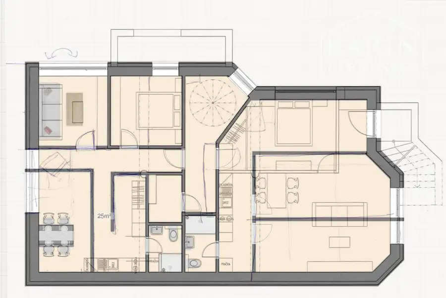
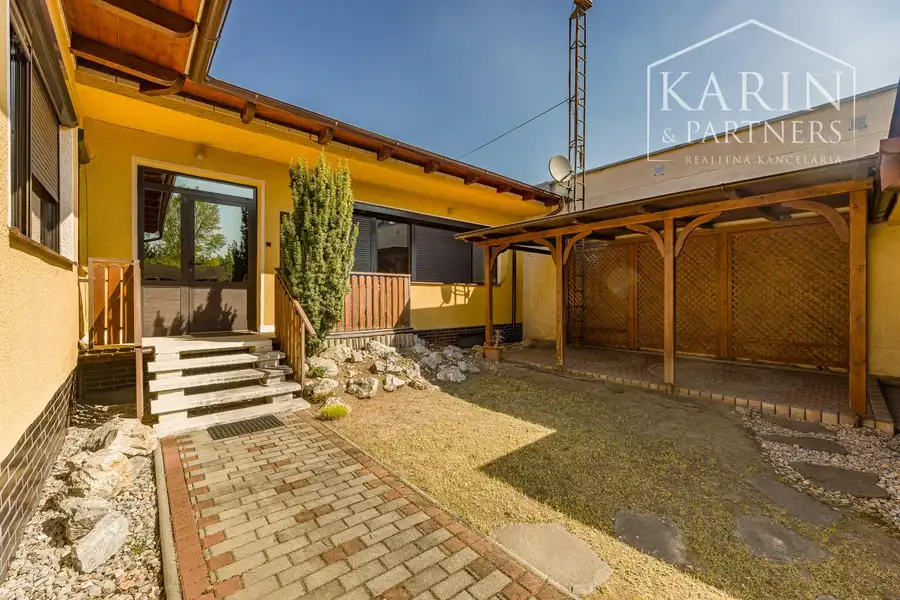
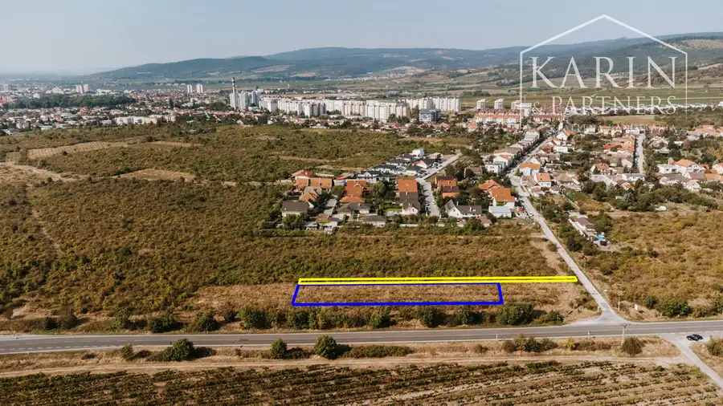

Rodinný dom Zvolenská ulica, Komárno
Komárno
- Plocha58.6 m²
- StavPôvodný stav
- VlastníctvoOsobné
O nehnuteľnosti
Na predaj starší rodinný dom s rozlohou 58,6m2 so sedlovou strechou a samostatnou účelovou budovou vo dvore, 360 m2 pozemku v jedinečnej lokalite, skrytej, slepej uličky Zvolenskej ulice v Komárne .Dom postavený v roku 1968 pozostáva z 2 izieb, predsiene, kuchyne, kúpeľne a špajzeStrecha domu je po veľkej rekonštrukcii krytiny a podkrovie je použiteľné na vytvorenie nových obytných priestorov. Dom je napojený na všetky IS /voda, plyn, elektrina/. Odvod splaškovej vody je napojený na obecnú kanalizáciu, ktorá vedie v tesnej blízkosti pozemku pri ceste pred domom. V zadnej časti pozemku sa nachádza menšia účelová budova s dvomi samostatnými vchodmi a tromi miestnosťami, ktorú možno premeniť na dielňu, letnú kuchyňu s terasou a posedením, kanceláriu pre home office, či úložný priestor pre športové náčinie alebo garáž pre motorku.Dom sa nachádza v strednej časti slepej uličky, ktorá je využívaná len rezidentmi okolitých domov, čo vytvára veľmi pokojnú atmosféru s minimálnym prejazdom áut. V ľavej časti pozemku od príjazdovej cesty je postavená drevená garáž o rozlohe 15m2. Dom aj účelová budova sú ponechané v pôvodnom užívateľskom stave a je na ich nutné vykonať kompletnú rekonštrukciu stien, podláh aj inžinierskych sietí.Veľkou výhodou domu je okrem polohy aj jeho primeraná rozloha, s ohľadom na spotrebu energií, a nákladov na rekonštrukciu . Izby domu sú orientované na východ, čo poskytuje izbám ranné slniečko a od poludnia príjemný chládok, pričom pozemok a účelová budova orientované na juh sú zaliate celodenným slnečným svitom. Dom je ideálny pre ľudí žijúcich vo dvojici, samostatne žijúceho aktívneho človeka alebo malú rodinku, ktorá by využila vytvorenie nových priestorov v podkroví.Väčšina Komárňanov sa po Zvolenskej ulici nikdy neprešla a väčšina ju nikdy ani neprejde, pretože do nej vojdete,len ak v nej bývate alebo sem prídete na návštevu.Táto ulica je prekvapivým, skrytým klenotom pokojného bývania, ktorý stojí za to objaviť.Cena 130.000,- € vrátane provízie RKKontakt: Mgr. Karin Zápalová, RSc.0918 971 554zapalova@karinpartners.sk
Parametre
| Druh | Rodinný dom |
|---|---|
| Dátum zverejnenia | 22. 9. 2025 |
| Plocha pozemku | 360 m² |
| Stav nehnuteľnosti | Pôvodný stav |
| Typ | Predaj |
| Vlastníctvo | Osobné |
| Vybavenie | Špajza |
| Zastavaná plocha | 58 m² |
| Úžitková plocha | 58.6 m² |
Kde to je


Mohlo by Vás zaujímať

Komerčné priestoryNové5 760 000 €NA PREDAJ Polyfunkčný objekt s možnosťou prerobenia na bytové jednotky v zaujímavej lokalite - v Petržalke. Petržalka, Bratislava 355 m² Polyfunkčný objekt s možnosťou prerobenia na bytové jednotky v zaujímavej lokalite - v Petržalke- časť Dvory, Handlovská ul.Budova má 3 podlažia s…
DomNové10 220 000 €Výnimočný rodinný dom v tichej lokalite – Komárno, Nová Stráž Komárno 628 m² 4izbový dom, Komárno, Nová Stráž, pivnica, garážeNa predaj výnimočný 4-izbový prízemný tehlový rodinný dom s pivnicou a dvoma garážami, situovaný ako…
PozemokNové8 Cena dohodouPozemok v Pezinku vhodný na výstavbu rodinného domu Pezinok 1410 m² Pozemok na výstavbu rodinných domovRealitná kancelária KARIN & PARTNERS Vám ponúka na predaj priestranný pozemok v Pezinku - v atraktívnej…